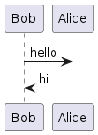
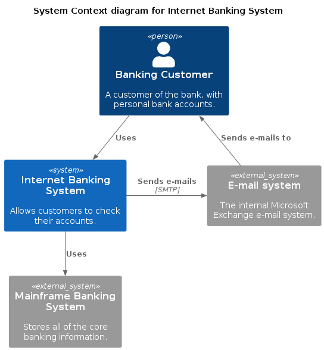
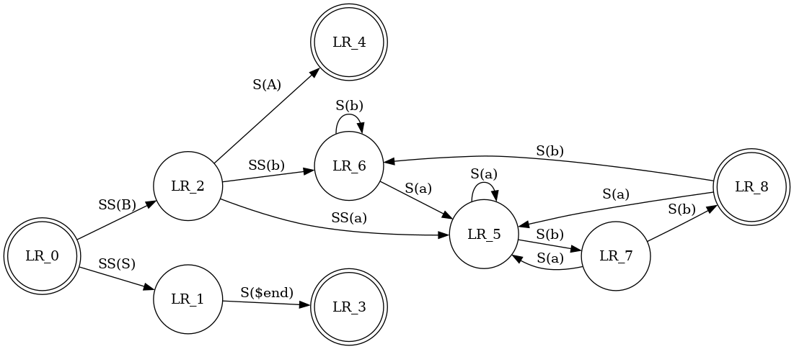

Diagram
With the Kroki integration, you can create diagrams in AsciiDoc, Markdown, reStructuredText, and Textile.
You can use the free public cloud instance https://kroki.io or you can install Kroki on your own infrastructure. After you’ve installed Kroki, make sure to update the server URL to point to your instance.
PlantUML
In order to create a Diagram using AsciiDoc you would need to add following code to your document.
Sequence Diagram example
[plantuml]
....
Bob->Alice : hello
Alice -> Bob : hi
....

Figure 1. Sequence Diagram example
Diagrams Files can be also be referenced using external files.
Non asciidoc files must not be in pages folder to be referenced. ie. puml, png. etc
|
Figure 2. Sequence Diagram example
C4 (based on PlantUML)
[c4plantuml]
....
@startuml
!include C4_Context.puml
title System Context diagram for Internet Banking System
Person(customer, "Banking Customer", "A customer of the bank, with personal bank accounts.")
System(banking_system, "Internet Banking System", "Allows customers to check their accounts.")
System_Ext(mail_system, "E-mail system", "The internal Microsoft Exchange e-mail system.")
System_Ext(mainframe, "Mainframe Banking System", "Stores all of the core banking information.")
Rel(customer, banking_system, "Uses")
Rel_Back(customer, mail_system, "Sends e-mails to")
Rel_Neighbor(banking_system, mail_system, "Sends e-mails", "SMTP")
Rel(banking_system, mainframe, "Uses")
@enduml
....

GraphViz
[graphviz]
....
digraph finite_state_machine {
rankdir=LR;
node [shape = doublecircle]; LR_0 LR_3 LR_4 LR_8;
node [shape = circle];
LR_0 -> LR_2 [ label = "SS(B)" ];
LR_0 -> LR_1 [ label = "SS(S)" ];
LR_1 -> LR_3 [ label = "S($end)" ];
LR_2 -> LR_6 [ label = "SS(b)" ];
LR_2 -> LR_5 [ label = "SS(a)" ];
LR_2 -> LR_4 [ label = "S(A)" ];
LR_5 -> LR_7 [ label = "S(b)" ];
LR_5 -> LR_5 [ label = "S(a)" ];
LR_6 -> LR_6 [ label = "S(b)" ];
LR_6 -> LR_5 [ label = "S(a)" ];
LR_7 -> LR_8 [ label = "S(b)" ];
LR_7 -> LR_5 [ label = "S(a)" ];
LR_8 -> LR_6 [ label = "S(b)" ];
LR_8 -> LR_5 [ label = "S(a)" ];
}
....
